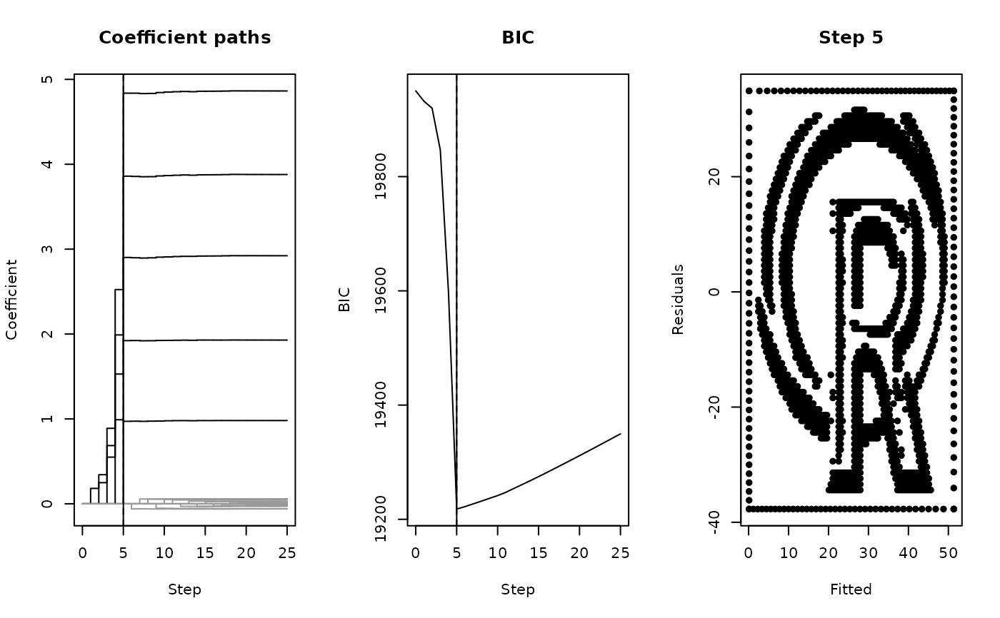
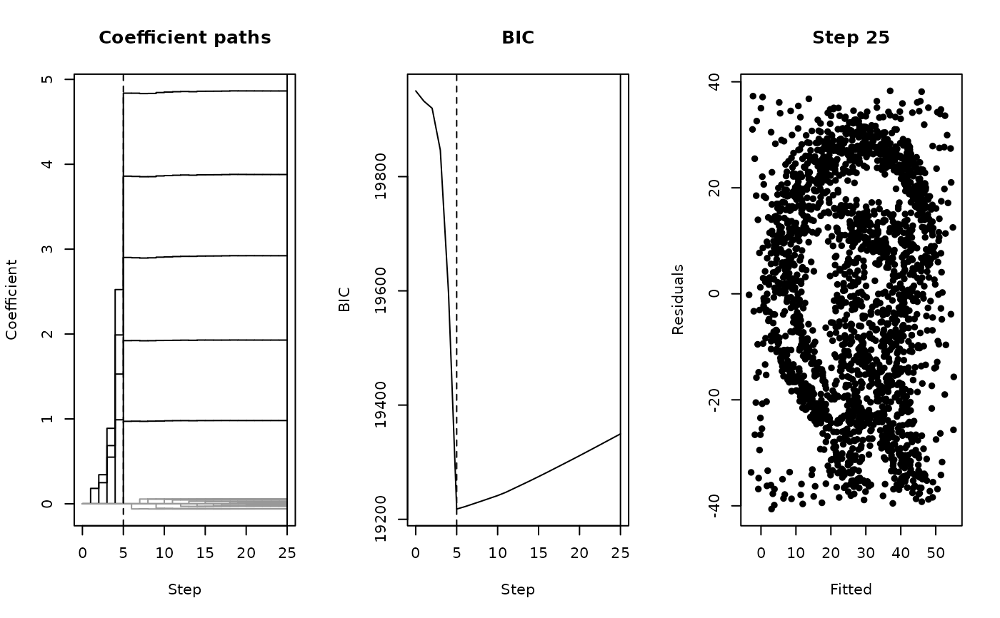
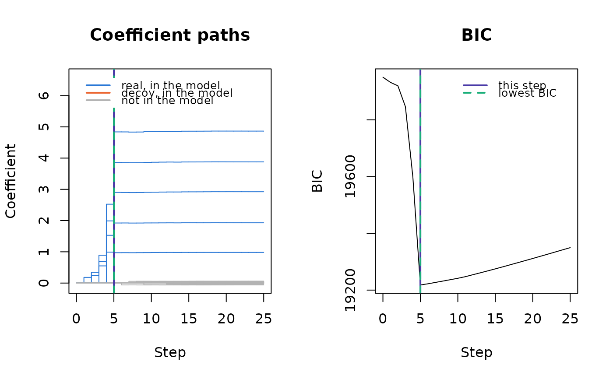

Draws one step of a selection recorded by surreal_path(), as a row of
panels: the share each step explained, the criterion along the path, and
the residual plot of the model at the step.
Arguments
- x
A
surreal_pathobject.- step
Integer. The step to draw, from 0 to the number of predictors. Default is the best step.
- panels
Character. The panels to draw, in order, from
"explained","coefficients","criterion"and"residuals". Default is all but"coefficients". Four panels are drawn two to a row.- ...
Further arguments passed to
plot()for the residual plot.
Details
The panels are:
"explained": a bar for each step, on a log scale, for the share of the variation left before the step that its predictor explained. A dotted line marks the criterion's charge for a predictor: the least a step has to explain for the criterion to fall. The bars above it are the steps that improved the model."coefficients": the coefficient of every predictor along the path."criterion": the criterion along the path."residuals": the residual plot of the model at the step.
A solid violet line marks the step that is drawn, and a dashed green line the best step. A predictor is blue once it is in the model at the step, and gray until then. A decoy in the model is orange, when the path knows its decoys.
Examples
set.seed(114)
hidden <- surreal(r_logo_image_data)
path <- surreal_path(surreal_decoys(hidden, n = 20))
plot(path)

plot(path, step = 25)

# The coefficient paths, with the criterion beside them
plot(path, panels = c("coefficients", "criterion"))
